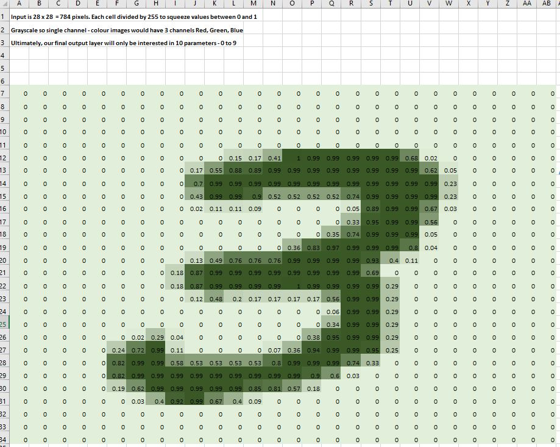
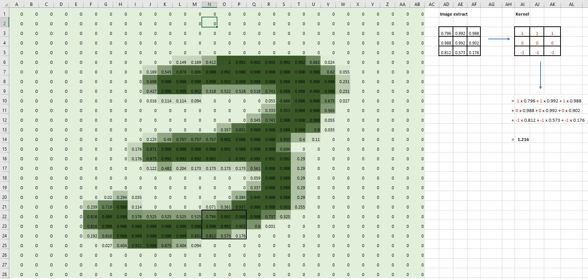
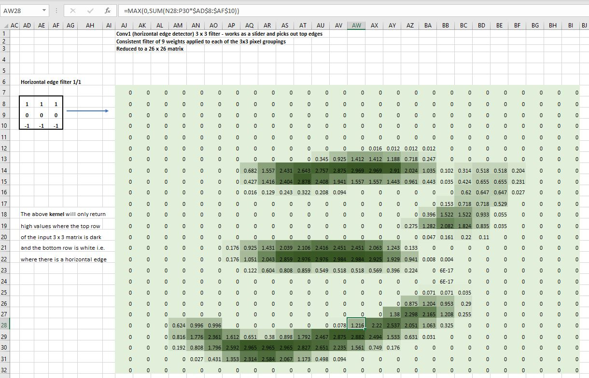
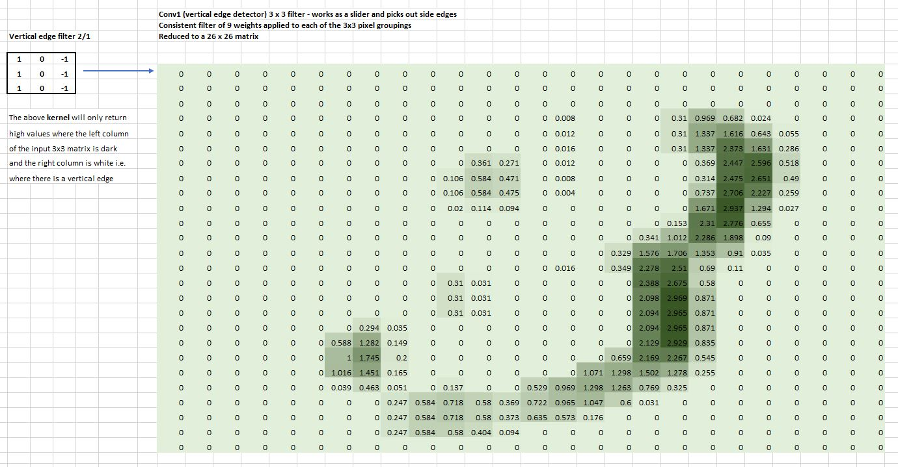
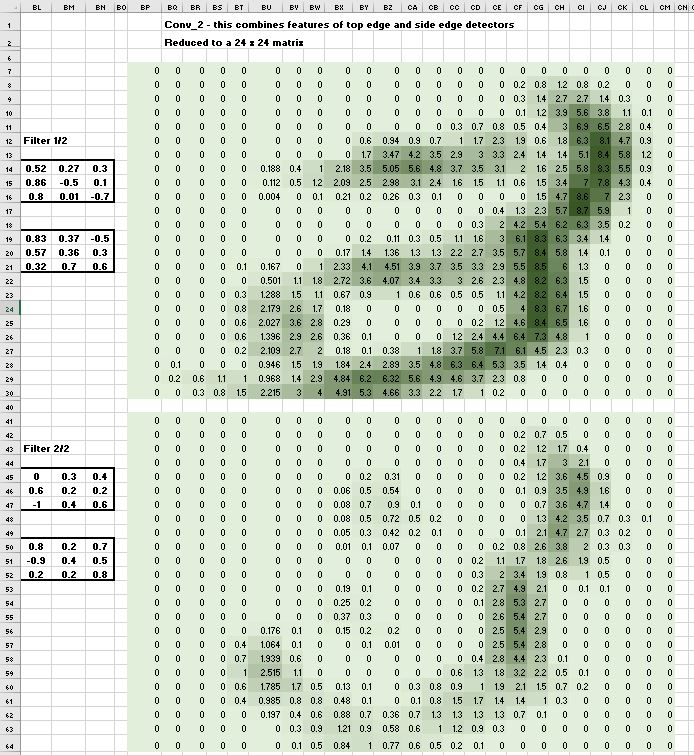
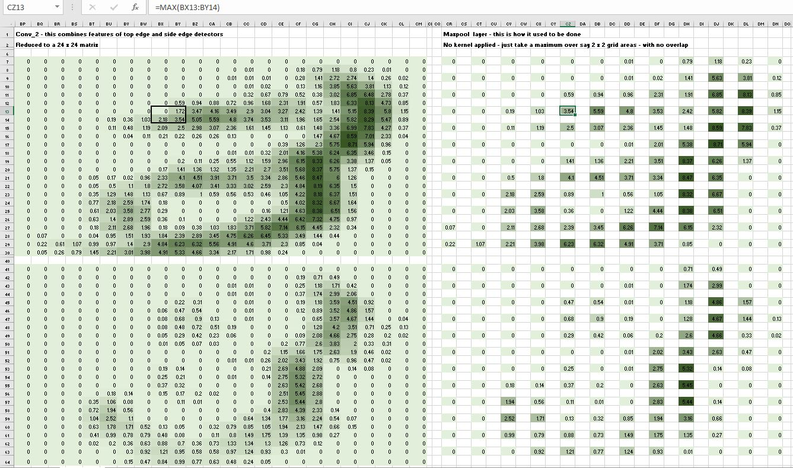
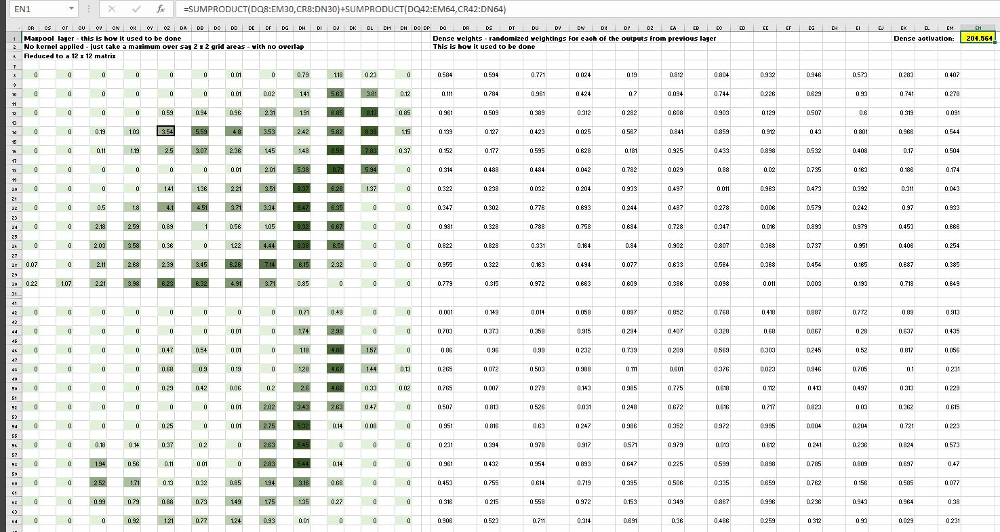
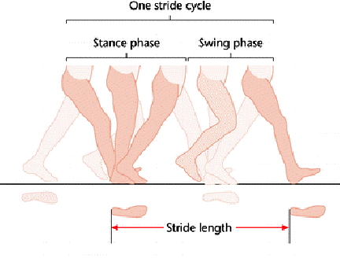
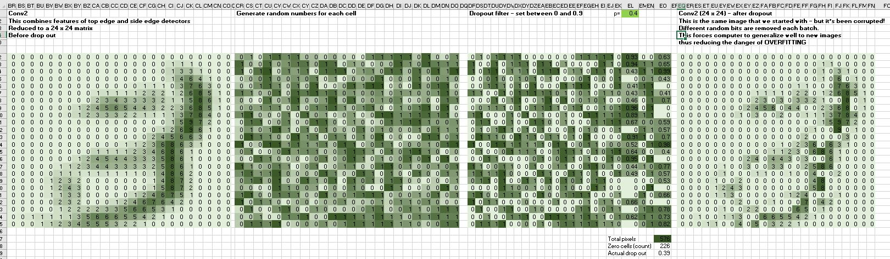

Covolutional Neural Networks (CNNs)
This is my follow up to the second half of Lesson 8: Practical Deep Learning for Coders 2022 in which Jeremy demonstrates the inner workings of a Convolutional Neural Network (CNN) using Excel. In the video, which draws heavily on Deep Learning for Coders with Fastai and PyTorch: AI Applications Without a PhD : Chapter 13, Jeremy walks through the CNN architecture for a handwritten digit 7 in CSV format taken from the MNIST dataset. To consolidate my understanding I replicated the same process for a sample handwritten digit 3.
The Magic of Convolutions
I downloaded the MNIST dataset in csv format from here. Each row of the CSV file has 785 columns, the first column specifies which of the ten handwritten digits is represented (between 0 and 9). The remaining 784 columns contain values which lie on the scale 0 (white) to 255 (black). Why 0 to 255 you may ask? Well, it has to do with computer memory. The number 255 is written as 11111111 in binary form which is 8 bits. In our case we have a grayscale (or 1 channel image) so each pixel takes up 8 bits. Note that a colour image is most commonly represented by 3 channels (Reg, Green, Blue) in which case each pixel requires 24 bits.
To see the digit visually we first have to re-arrange the 784 values into a 28 x 28 square, and then use conditional formatting to match the scale - darker for large values, lighter for low values:

One of the most powerful tools that machine learning practitioners have at their disposal is feature engineering. A feature is a transformation of the data which is designed to make it easier to model. In the context of an image, a feature is a visually distinctive attribute. For example, the number 7 is characterized by a horizontal edge near the top of the digit, and a top-right to bottom-left diagonal edge underneath that. On the other hand, the number 3 is characterized by a diagonal edge in one direction at the top left and bottom right of the digit, the opposite diagonal at the bottom left and top right, horizontal edges at the middle, top, and bottom, and so forth. So what if we could extract information about where the edges occur in each image, and then use that information as our features, instead of raw pixels?
It turns out that finding the edges in an image is a very common task in computer vision, and is surprisingly straightforward. To do it, we use something called a convolution. A convolution requires nothing more than multiplication, and addition—two operations that are responsible for the vast majority of work that we will see in every single deep learning model.
How it used to look like
The underlying concept of CNNs has not changed although there have been architecture modifications. First, let’s look at a traditional CNN - how they generally used to be constructed. A convolution applies a kernel across an image. A kernel is a little matrix, such as the 3×3 matrix in the top right of the image below:

We can think of a convolution as a sliding window of little mini dot products of these 3 x 3 matrices or kernels. Note that they don’t have to be of size 3 x 3. We randomly initalize these kernels and then use Stochastic Gradient Descent(SGD) to optimize these parameters. We can repeat the same idea as we add layers.
After the application of the first filter, we now have two channels:
- Channel 1: which picks out
horizontaledges

Note that we clip the resulting value to zero by taking the maximum of 0 and the mini dot product, and our grid sizes have reduced from 28 x 28 to 26 x 26.
- Channnel 2: which picks out
verticaledges

In the second layer we have 2 kernels applied to each channel:

Note that our grid sizes have reduced further to 24 x 24 from our original 28 x 28.
At this stage, instead of applying further kernels, we would instead use MaxPool which just takes the maximum value over say 2 x 2 grid areas, with no overlap:

In the spreadsheet screenshot above, note that the maximum value of the 2 x 2 grid on the left is 3.54, which is the value returned in the MaxPool layer on the right. Note also that our grid size is now just 12 x 12 compared with our original size of 28 x 28.
The final step would be to apply a dense layer which is just randomized weightings applied as SUMPRODUCT in excel over the Maxpool layer outputs, to give a final activation value for conversion to a probability using Softmax:

How it looks like now
As intimated earlier, the architecture of modern CNNs is generally a slight variant of that illustrated above. In the above examples our kernels applied mini dot products across our initial image grid, with no overlap. As a result, it takes a lot of steps (and therfore layers) to reduce our grid into the number of activations that we are interested in - for our handwritten digits problem we would perhaps be interested in 10 activations, the probability for each of the 10 digits, or maybe just 1 - the probability of it being a particular digit.
Stride 2 convolutions

It’s all about getting there faster!
Modern approaches tend to apply something called stride 2 convolutions. This works by skipping over a column and row when sliding the kernel over our input grid. This effectively reduces the grid feature size by a factor of 4 (2 rows x 2 columns) each convolution, resulting in fewer steps to get down to the required number of activations.
Drop out

This isn’t our model giving up on the image classification problem! Drop out refers to the removal of different random bits of our image from each batch. Why would we want to do this? It sounds somewhat counter-intuitive - surely we want to give our model the best possible chance of classifying our image? Well, yes and no.
Essentially there is, as with all models, an inherent compromise between a model that generalizes well to new images and getting good training results, with the risk of overfitting. You can think of dropout as a kind of data augmentation, except we are applying the corruption or augmentation to our activations, rather than our original input image. These dropout layers are really helpful for avoiding overfitting. Setting a higher drop out rate will mean that our model generalizes well to new images, but perform less well on the training set.
Here is an example of how it works:

We generate a grid of random numbers to match the size of our 24 x 24 input layer, and then set our drop our rate (a value between o and 1) to create a mask to be applied to our image. In this case we have chosen a drop out rate of 0.4 - which basically removes 40% of the pixels - thus corrupting our image, forcing our model to interpret the underlying structure of the image, thus reducing the risk of overfitting.
Average Pooling
Nowadays there is no single dense layer matrix multiply at the end as illustrated previously. In addition, once we get down to say a 7 x 7 grid after stride convolutions, instead of doing a Maxpool generally we carry out an Average Pooling.
Say, for example we have a bear detector image classifier - the model will basically be asking “Is there a bear in this part of the image?” for each of the say 49 remaining pixels in our final 7 x 7 activation. This works well for a single image that fills the whole grid, but if it is a small image in the corner, or a multi-image image then it might not be classified correctly (maybe only 1 out of the 49 pixels has a bear in it). So we might be better choosing Maxpool in this case.
The key takeaway is that it is very important that we undestand the architecture of our model, especially the final layer, to take account of the specific task at hand and the nature of the data included in our model.
Fast.ai in fact goes for a blend, and concatenates both MaxPool and AvgPool.
Key takeaways
This blog does not by any means attempt to understate the complexity of CNNs, but hopefully by simplifying the concept it might help provide a satisfactory overview, and after working through an example of your own, you will have the confidence to dig deeper.
An excellent and comprehensive coverage of CNNs is included in Deep Learning for Coders with Fastai and PyTorch: AI Applications Without a PhD : Chapter 13.